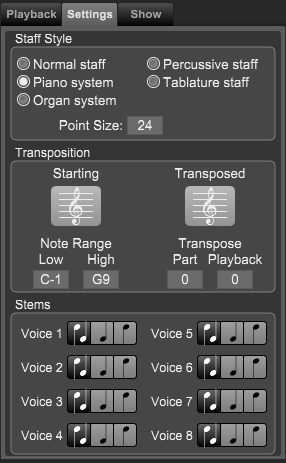

Track Inspector Panel - Track Settings Tab
Track Inspector Panel - Track Settings Tab
If needed, click on the Track section at the top of the panel and then the Playback tab.
The Settings tab area contains basic settings for the current track.

Staff Style
Use theses setting to change to type of staff for this instrument. You would rarely change the style of an instrument. An example of when to use it is after importing a MIDI file, you want a synthesizer track to be displayed as a piano system instead of a single staff.
- Normal staff - A normal single staff for instruments like trumpet, clarinet, etc.
- Piano system - A piano system that consists of a treble clef and bass clef staff.
- Organ system - An organ system that consists of a treble clef, bass, and an organ pedal bass staff.
- Percussive staff - A staff used for percussion instruments. When you choose this option you will see an additional tab named "Drum Map" tab that let's you mapped pitches to staff lines and note heads.
- Tablature staff - A tablature staff is used to note fret numbers for guitar tracks.
- Point Size numerical - Use this numerical to set the size of the staff throughout the score.
Note: If you hold down the ctrl[cmd] while dragging this numerical it will change all staves to the same value.
Transposition
- Starting Clef pop-up menu. Use this pop-up menu to select which clef Overture uses to notate the track in the current score.
Overture sets this numerical automatically when you select an Instrument Name from the Instrument Name pop-up menu.
- Transposed Clef pop-up menu. Use this pop-up menu to select which clef Overture is to use to notate the track in a transposed extracted score.
This pop-up menu has no effect on the current score, only on the score containing the extracted part.
- Note Range numericals. Use these numericals to set the range of the Instrument notated by the track. The left numerical sets the lowest note in the range.
The right numerical sets the highest note in the range. You can search your score for notes that are out of an instrument's specified range by choosing Options>Show>Range Errors.
- Transpose numerical. If you're notating a transposed instrument (such as many trumpets, clarinets, english horns, and so on) and you want Overture to transpose an extracted part into the correct key, use this numerical to set the transposition amount. This numerical does affect MIDI playback pitch - it's used strictly to transpose a track when you extract it. To display the transposition in the current score, choose Options>Show>Tracks Transposed. For example, if the extracted track is to be played by a Bb trumpet, set the numerical to 2. Since a Bb trumpet sounds a major second lower than written, a value of +2 indicates that the extracted trumpet part needs to be transposed two half-steps higher than in the conductor's score.
- Playback numerical. Use this numerical to set the playback offset for instruments that sound differently from how they are written. This does not affect the extracted part. For example, if you're notating a Guitar, set the Playback numerical to -12. Guitar parts are written an octave above where they actual sound. Overture sets this numerical automatically when you select an Instrument Name from the Instrument Name pop-up menu.
Overture automatically sets these numericals when you create a new track. For more information about extracted parts, see “Active Parts Panel”.
Stems
There are three possible stem directions:
- Auto Stem: Overture determines stem direction based on staff position. Stems point down for any notes below the middle line and point up for any notes on or above the middle line.
- Up Stem: Overture makes all stems point up regardless of staff position.
- Down Stem: Overture makes all stems point down regardless of staff position.
To switch between them, simply click the icon in the Stem column until it shows the desired stem direction.
Important:
Setting a direction in the stem column does not change the stem directions of any existing notes in a track. Rather, it sets the direction for any newly entered notes. If you want to change stem direction of existing notes, use the Notes>Stem>Stem Up or Notes>Stem>Stem Down commands.
|